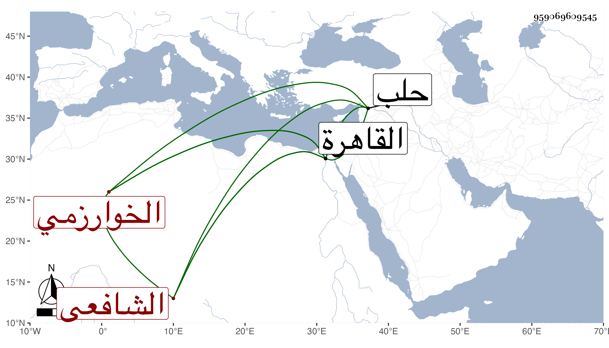

0902Sakhawi.DawLamic.ITO20230111-ara1.EIS1600.959069609545
Biography ID: 959069609545
294
محمد بن أحمد همام الدين الخوارزمي الشافعي نزيل القاهرة وهو بلقبه أشهر . اشتغل ببلاده ثم قدم حلب قبل الفتنة فأنزله الشرف أبو البركات الأنصاري القاضي في دار الحديث البهائية ثم تحول إلى القاهرة في أوائل أيام الناصر واستمل عليه بعض الإملاء فحصل له بعض المدارس ثم رغب عنها للحاجة وعلم جمال الدين به فاستحضره إليه بعد أن بولغ عنده في وصفه واستخص به وأسكنه بالقرب منه ورتب له الرواتب الجزيلة فلما تمت مدرسته استقر به شيخها وتحول إلى المسكن الذي عمره له فيها وقرر له معاليم ورواتب خارجا عن ذلك وصار ينعم عليه بالهدايا والعطايا مع مراعاة جانبه وسماع كلامه فنبه بعد أن كان خاملا وتحلى بما ليس فيه بعد أن كان عاطلا وأنثال عليه الطلبة لأجل الجاه فكان يحضر درسه منهم إضعاف المنزلين فيه وأقرأ بها الحاوي والكشاف ثم طال عليه الأمر فاقتصر على الكشاف وكان ماهرا في إقرائه إلا أنه بطئ العبارة جدا يمضي قدر درجة حتى ينطق بقدر عشر كلمات مشاركا في العلوم العقلية مع سلامة الباطن وإطراح التكلف بحيث يمشي في السوق ويتفرج في الحلق وبركة الرطلي وغيرها بل كانت له ابنة ماتت مها فصار يلبسها بزي الصبيان ويحلق شعرها ويسميها سيدي علي وتمشي معه في الأسواق إلى أن راهقت وهي التي تزوجها الهروي فحجبها بعد . هكذا ذكره شيخنا في أنبائه وقال في معجمه أنه ولد في حدود الأربعين . وقدم القاهرة وهو شيخ فأقرأ الكشاف والعربية وغيرهما وسمعت كثيرا من الفضلاء يطرونه في تقرير الكشاف مع التحرز في النقل وصحة الذهن والمعتقد ، وقد حضرت دروسه وسمعت من فوائده زاد في موضع آخر أنه كان يقول أن الهروي صهره من طلبته ولذا انتدب معه وكان ما شرح في محاله . وقال ابن خطيب الناصرية في تاريخه : كان إماما عالما فاضلا فقيها ذا يد في الأصول والمعاني والبيان وغيرها . وقال المقريزي في عقوده : كان متحرزا في الد وصحيح الذهن سليم المعتقد مع الصيانة والإنجماع وتعدد الفضائل . قلت وقد أخذ عنه غير واحد من محققي شيوخنا . مات في العشر الأخير من ربيع الأول سنة تسع عشرة وقد جاز السبعين رحمه الله .
